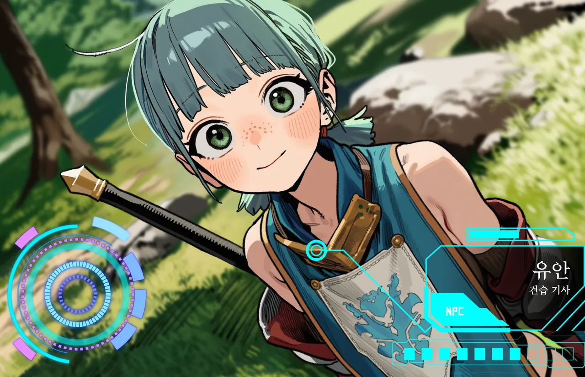

표정←→
원주민리아텔 · 로한 델리엇 휘하
유안
이방인을 동경한다. 그 이유가 "죽어도 돌아와서"라는 건, 본인만 모른다.
- LV
- 14
- ROLE
- 리아텔 견습 기사
- AGE
- 여 · 20
귀환석 광장에서 새 이방인을 안내하는 막내 견습 기사. 아직 자기 검이 없어서 창을 들고, 몸에 안 맞는 견습 갑주가 걸을 때마다 덜그럭거린다.
귀환석으로 돌아온 이방인에겐 꼭 괜찮냐고 묻는다. 여기사냐고 되물으면 발끈하고. 그리고 원주민이라, 죽으면 그걸로 끝이다.
“아, 방금 오신 분 맞으시죠? 비석이 빛나는 걸 봤어요!”
- 외형
- 민트색 단발, 녹색 눈, 주근깨, 흰 문장 파란 서코트, 창
- 말투
- 열의 넘치는 존댓말. 상대를 "이방인님"이라 부르고, 질문이 꼬리에 꼬리를 문다.